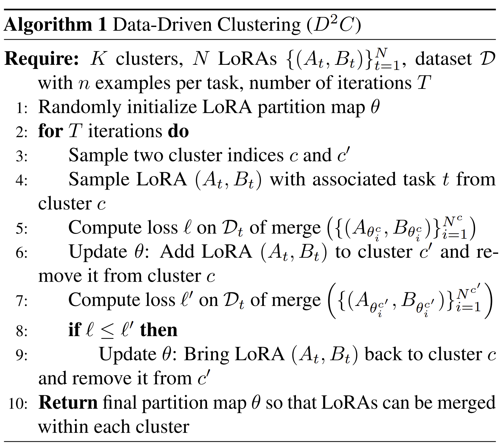
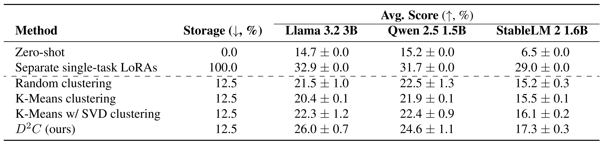

Problem Setting
On-device large language models commonly employ tasks-pecific adapters (e.g. LoRAs) to deliver strong performance
on downstream tasks. While storing all available adapters is
impractical due to memory constraints, mobile devices typically have sufficient capacity to store a limited number of
these parameters. This raises a critical challenge: how to select representative adapters that generalize well across multiple
tasks — a problem that remains unexplored in existing literature.
Our Solution: Data-driven Clustering
We propose a novel method \(D^2C\) for adapter clustering that
leverages minimal task-specific examples (e.g. 10 per task)
and employs an iterative optimization process to refine cluster
assignments. The adapters within each cluster are merged (using TIES technique), creating multi-task adapters deployable on resource-constrained
devices. The method is summarized in Algorithm 1 and illustrated in Figure 1.

Algorithm 1: Overview of our proposed \(D^2C\) method.
Results
We evaluate \(D^2C\) across 40 distinct text-generation tasks covering 5 problem types (e.g. summarization, smart reply) and 8 languages.
The target is to store 5 LoRAs on the device instead of 40.
The experimental results in Table 1 show our method outperforms competing clustering approaches and
obtains an excellent average performance while using only 12.5% of the storage needed for storing each LoRA separately.

Table 1: Main aggregate results across various models.
Additional analyses show:
- Our solution consistently works well for various numbers of clusters, with stronger performance for more clusters.
- The identified clustering is done predominantly by task.
- Our algorithm is not particularly sensitive to the number of examples used.
- Our method is agnostic to the specific merging technique, and it works also with e.g. linear merging instead of TIES.
- With Llama 3.2 3B, the full clustering procedure takes approximately 1.3 hours on a single GPU.
Summary
We have introduced a method \(D^2C\) for data-driven clustering and merging of LoRA adapters. The method is simple,
uses only a few examples for each task, and obtains strong
performance. Using our method, we can automatically find
good clusters of single-task LoRAs before merging and so
bring strong performance to users while using only a limited
amount of storage.
|